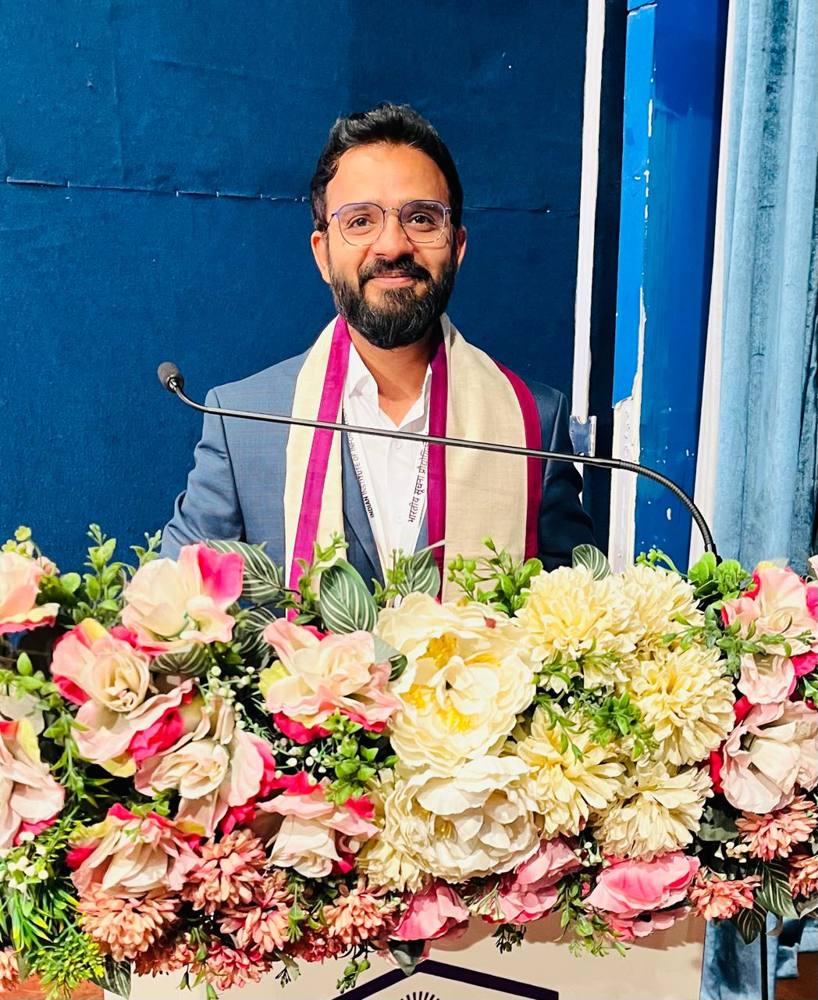

Assistant Professor | IIIT Surat
Principal Investigator, BIWIL Lab
Establishment: Established with funding from ANRF under the Prime Minister Early Career Grant (PMECRG).
BIWIL focuses on Molecular Communication, 6G Wireless Systems, and Bio-inspired Networking for wave-denied and challenging environments. The lab develops hardware prototypes of fluid-based bounded molecular communication systems and investigates various aspects of bounded channels, including diffusion and anomalous diffusion, channel geometry, transmitter–receiver design, boundary conditions, first-passage characteristics, and molecular signal propagation.
The lab combines theoretical modeling, simulation, hardware experimentation, and AI-driven approaches to develop and validate next-generation communication technologies for confined, biological, underwater, underground, and other environments where conventional wireless communication is limited.
Seeking highly motivated candidates for research in Molecular Communications. To apply: Please send your CV and a Statement of Purpose (SoP) to the email below.
ANRF — Prime Minister Early Career Research Grant (PMECRG)
Project: “Analysis and Prototyping of Wireless Communications in Wave Denied Environment: A Molecular Layer Aspect of 6G (WiC-WD6G)”
Role: Principal Investigator (PI) | Status: Ongoing
TiHAN, IIT Hyderabad
Project: “Adaptive Mobile IoT Networks Using UAV-Assisted Weighted Federated Learning for Disaster Response”
Role: Co-Principal Investigator (Co-PI) | Status: Ongoing
5-Day Workshop
A Workshop on Next Generation Wireless and Biological Communications
Date: 18 Dec 2023 – 22 Dec 2023
Venue: IIIT Sri City
Guest Editor, IEEE TMBMC Special Issue
Molecular Communications in Complex Diffusive Environments: Anomalous Transport, Confined Geometries, and Bio-Inspired Applications